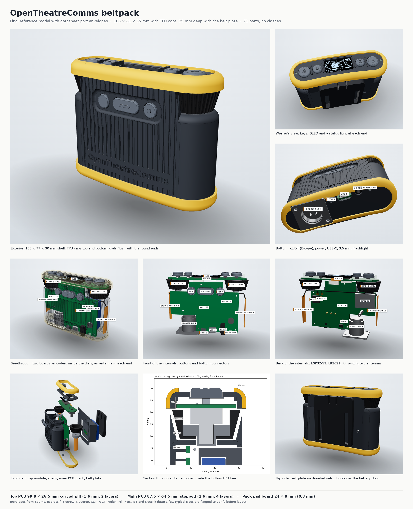

Repository README
An open, DIY full-duplex wireless theatre intercom beltpack in the spirit of the Hollyland Solidcom M1 and Clear-Com FreeSpeak II. It uses an ESP32-S3 with an LR2021 radio on 915–928 MHz (Australia), talks to PoE base stations over a 20 ms TDMA frame, and is 3D printed and hand-assembled.

What's here
| Path | Contents |
|---|---|
cad/final_bp.py |
CadQuery model of the whole beltpack: shells, TPU caps, dials, keys, both PCBs and every bought part as a datasheet envelope |
cad/geom.py |
Shared shape helpers (the curved pill plan, edge fillets, the flat-top frame) |
cad/clash.py |
Pairwise interference check across all 71 parts |
cad/export_boards.py |
KiCad hand-off: DXF outlines with true arcs, placement layers and dimensioned drawings |
cad/make_kicad.py, cad/make_enclosure_ref.py |
Build the KiCad projects (needs KiCad's pcbnew Python module) and the enclosure STEP |
cad/section.py, cad/size_table.py |
Section drawings and the placement CSV |
cad/out/beltpack_final.step |
Full assembly (STEP) |
cad/out/stl/ |
Every printed part as STL |
cad/out/kicad/ |
Board outlines (DXF), drawings, placement CSV |
kicad/ |
Ready-to-open KiCad projects for the three boards, the enclosure STEP for the 3D viewer, and a placement script |
renders/ |
Render sheet and individual renders |
viewer/ |
Interactive three.js viewer (open viewer/index.html from a local web server) |
The firmware and system architecture, the BOM and the open decisions live in the
architecture doc. The 3D viewer
is the same page as viewer/.
The pack
- Size: 105 × 77 × 30 mm shell (108 × 81 × 35 mm with the TPU caps, 39 mm deep with the belt plate). The back follows a 400 mm radius to sit on the hip.
- Controls: four talk keys and a 1.3 in OLED on the flat top, a detented dial at each round end, Back / Function / Menu in a recessed panel on the front.
- Bottom: XLR-4 male (D-type), power button, USB-C, 3.5 mm TRRS, flashlight.
- Power: a 104050 Li-ion pack (2500 mAh) forms the back of the case; the belt plate slides up its rails and locks it in.
- Boards: a curved top PCB (99.8 × 26.5 mm) under the keys carrying the OLED and both encoders, and a vertical main PCB (87.5 × 64.5 mm) carrying the MCU, radio, codec, power and connectors. A 10-way JST SH cable links them.
- Radio: an Elecrow LR2021 module on 915–928 MHz with switched antenna diversity: a pSemi PE4259 picks between two flex antennas, one inside each round end, every frame.
Rebuilding
Needs Python 3 with cadquery, ezdxf, matplotlib and Pillow.
cd cad
python3 final_bp.py # model, STEP, GLB, STLs, parts_final.json (about a minute)
python3 clash.py # interference check: expect "CLASHES: 0"
python3 export_boards.py # DXFs and drawings into out/kicad
python3 section.py # section drawings
python3 size_table.py # placement.csv
python3 build_viewer.py # viewer/index.html + viewer/beltpack.json
python3 make_enclosure_ref.py && python3 make_kicad.py # KiCad projects in ../kicad (needs KiCad 7+)
Status
This is a reference model to start KiCad layout, not a released design. A few part envelopes are typical sizes still to check against
the exact parts you buy: the PEC12R body height, the XLR D-flange and depth, USB4105, the PTS815 height variant, the side tact switch,
the JST SH bodies and where the OLED panel's active area sits on its glass. See cad/out/kicad/README.md.